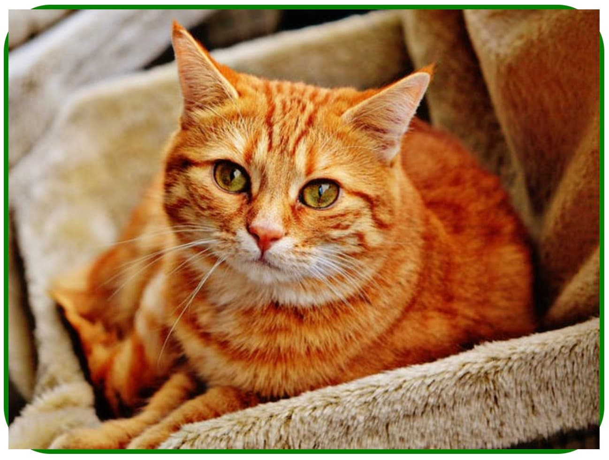

Свойство overflow
Размеры элемента определяются контентом внутри него или задаются явно. Что происходит при изменении контента внутри элемента? Например, если не установить высоту, то она будет увеличиваться пока в элементе не поместится весь контент.
Но что если высота или ширина указаны явно? Тогда блок не может увеличиться, и
содержимое его переполняет - выходит за границы. Свойство overflow управляет
тем, как ведёт себя содержимое элемента, если его размер превышает допустимую
длину или ширину.
overflow: visible | hidden | scroll | auto
visible- переполняющее содержимое видимо. Значение по умолчанию.hidden- всё, что выходит за границы блока будет визуально скрыто.scroll- при переполнении появляются горизонтальная и вертикальная полосы прокрутки, даже если нужна только одна.auto- похоже на значениеscroll, но полосы прокрутки показываются только там, где они действительно необходимы, а не все сразу.
Также есть свойства overflow-x и overflow-y, управляющие переполнением
только в соответствующей плоскости.
Рассмотрим поведение элемента с фиксированными размерами для каждого значения
overflow.
Значение visible
Если не указать свойство overflow, то по умолчанию устанавливается значение
visible и, при переполнении, содержимое будет отображаться за пределами блока.
В примере граница блока обозначена красной рамкой.
Здесь важно помнить, что даже если снаружи элемента есть переполняющий его видимый контент, этот контент не влияет на геометрию соседних элементов, как с кнопкой в примере.
Значение hidden
Противоположное значение - hidden. В этом случае любое переполняющее
содержимое, которое выходит за границы элемента, не отображается. Такое
поведение удобно для использования с декоративными эффектами, примеры которых мы
рассмотрим дальше.
Помните, что в этом случае переполняющий контент не доступен и скрыт от пользователя. Именно поэтому мы никогда не задаём фиксированную высоту текстовым блокам.
Значение scroll
Если установленно значение scroll, переполняющее содержимое будет скрыто, но
появятся скроллбары, чтобы была возможность просмотреть весь контент. При этом
будут показаны оба скроллбара, горизонтальный и вертикальный, даже если нужен
только какой-то один.
Значение auto
Значение auto похоже на значение scroll, за исключением того, что
показываются только те полосы прокрутки которые действительно необходимы.
Скруглённое изображение
Изображения ведут себя так, что визуально выходят за пределы блока если их размер больше. Эта особенность всплывает в приёме скругления рамок изображения. Картинка оборачивается в «тумбу», которой задаются стили рамки и её радиуса.
<div class="thumb">
<img src="" alt="" />
</div>
Из-за того, что изображение всегда переполняет блок, визуально выходя за его рамки, получается не совсем то, что нужно.
На помощь приходит свойство overflow и его значение hidden, которое задаётся
«тумбе» и контролирует видимость переполняеющего контента. Цвет и размер рамки в
примере задан для визуализации, устанавливать какие-либо значения, кроме радиуса,
не обязательно.
Декоративный оверлей
Свойство overflow со значением hidden используется при создании декоративных
эффектов с появлением скрытого контента из-за границ блока.
Такой эффект реализуется в несколько простых шагов. Разберём стили для создания эффекта, полный код смотрите в живом примере.
<div class="box">
<div class="overlay"></div>
</div>
Вначале абсолютно позиционируем div.overlay относительно div.box и
растягиваем его на всю ширину и высоту div.box.
.box {
position: relative;
}
.overlay {
position: absolute;
top: 0;
left: 0;
width: 100%;
height: 100%;
}
Используя свойство transform и translateX, смещаем div.overlay влево на
100% его ширины. Трансформации будем детально рассматривать дальше.
.overlay {
position: absolute;
top: 0;
left: 0;
width: 100%;
height: 100%;
transform: translateX(-100%);
}
При ховере по div.box, используя transform и translateX, возвращаем
div.overlay в исходное положение.
.box:hover .overlay {
transform: translateX(0);
}
Задаём div.box свойство overflow со значением hidden, чтобы визуально
спрятать div.overlay, когда тот смещён за пределы div.box.
.box {
position: relative;
overflow: hidden;
}
Анимацию будем детально рассматривать в следующих занятиях, сейчас просто
используем одно свойство для визуализации появления оверлея. Добавляем
div.overlay переход для анимации свойства transform.
.overlay {
position: absolute;
top: 0;
left: 0;
width: 100%;
height: 100%;
transform: translateX(-100%);
transition: transform 250ms ease;
}